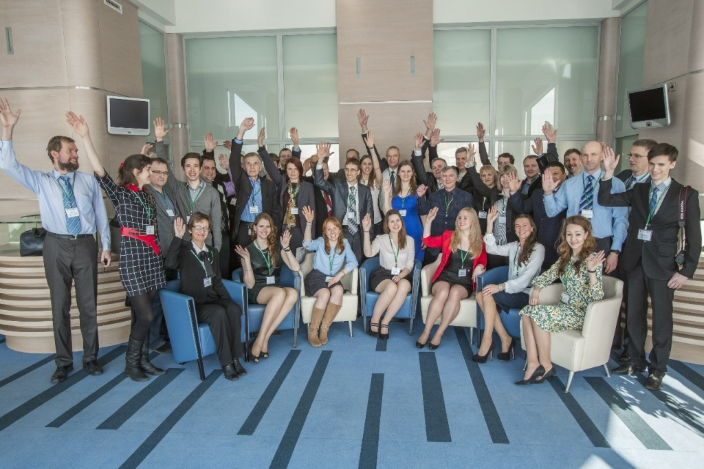
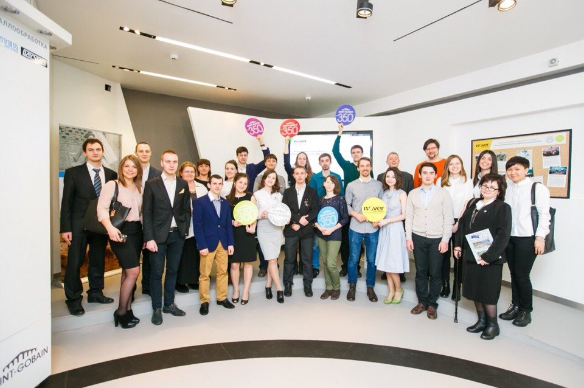

Достижения ИСИ |
|
|  |
Основным достижением института является высокое качество обучения.
Уже два года подряд инженерно-строительный институт занимает первое
место в России по среднему баллу ЕГЭ абитуриентов, зачисленных на
направление строительство. Институт имеет международную аккредитацию
реализуемых образовательных программ, так, в 2014 году институт получил
пять сертификатов соответствия ISO9001-2011 образовательной деятельности.
Преподаватели института активно занимаются не только учебной, но и научной деятельности, среди профессорско-преподавательского состава есть действующие руководители и сотрудники ведущих строительных организаций города, готовые передать свой практический опыт студентам. |
|  | Сотрудничество со строительными организациями является одним из приоритетных направлений деятельности, что позволяет материально поддерживать студентов во время обучения путем выделения для них именных стипендий от 3-20 тыс. рублей в месяц, специальных грантов и способствует быстрому трудоустройству, большинство студентов уже с 3-го курса работают по специальности в организациях-партнерах института на условиях частичной занятости. |